Rectal prolapse — the rectum turning inside out through the anus — is one of the commonest surgical emergencies in cattle, especially in calves. It looks alarming, but most early cases are repaired quickly and simply by a veterinarian.
This guide explains the causes, the grades of prolapse, the step-by-step repair (manual reduction and purse-string suture), when surgical resection is needed, and how to prevent it coming back.
What Is Rectal Prolapse in Cattle?
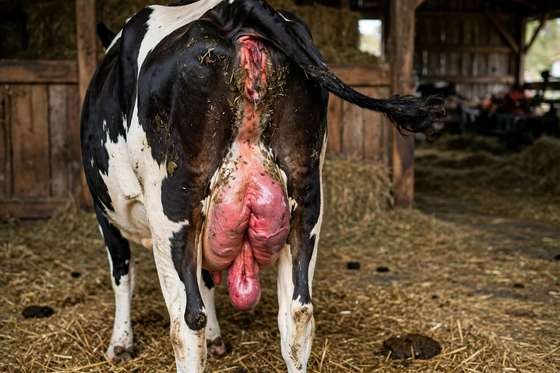
Complete rectal prolapse — the rectum stays outside
Rectal prolapse means the rectum turns inside out and protrudes through the anus. It is caused by repeated, forceful straining (tenesmus) — and the prolapse itself causes more straining, so the condition quickly gets worse if it is not treated.
It is commonest in young calves and in cattle with diarrhoea, heavy worm burdens or urinary problems. Early treatment is simple; delayed treatment can mean surgery.
1
Diarrhoea and gut irritation(Coccidiosis, worms and sudden feed changes cause the straining that pushes the rectum out)
2
Heavy parasite burden(Intestinal worms and coccidia are the commonest cause in calves)
3
Urinary straining(Urolithiasis and urinary tract irritation make the animal strain repeatedly)
4
Difficult calving and vaginal prolapse(Prolonged straining after calving can also push out the rectum)
5
Chronic coughing(Repeated coughing raises abdominal pressure and contributes to prolapse)
6
Poor body condition and weak tissues(Weak pelvic muscles in thin or sick animals give less support to the rectum)
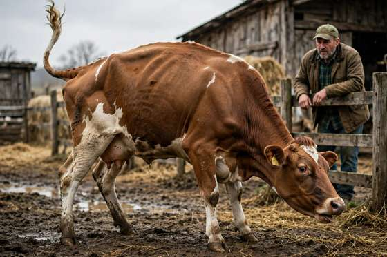
Straining (tenesmus) — the driving cause
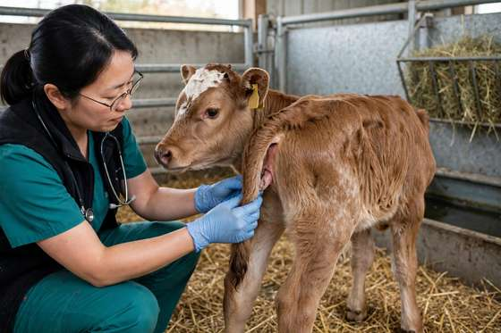
Commonest in calves — check for worms
Diagnosis and Grades of Rectal Prolapse
Diagnosis is by sight, but the veterinarian must judge the grade and the condition of the tissue — pink and moist tissue can be replaced; dark, dry or torn tissue may need resection. The cause of straining must be found at the same time.
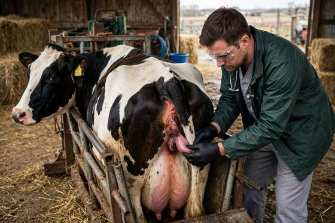
Examine the tissue — colour and damage decide the treatment
1
Grade 1 — Partial (mucosal) prolapse(Only the rectal lining shows as a small pink ring, often after straining; may return on its own)
2
Grade 2 — Complete prolapse(A tube of rectum stays outside the body; needs manual replacement by the veterinarian)
3
Grade 3 — Complete with damage(Swollen, dry, torn or necrotic tissue; replacement alone is not safe — resection is needed)
4
Check for the cause(Faecal examination for worms and coccidia, check urine flow, feed history and recent illness)
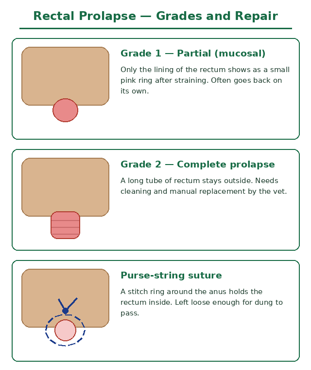
Grades of prolapse — and the purse-string repair
Treatment — Reduction Step by Step
Most early cases are treated without cutting: an epidural stops the straining, the prolapse is cleaned and gently pushed back, and a purse-string suture holds it in place while the cause is treated.
1
Restrain and give a caudal epidural(Epidural anaesthesia at the tailhead stops straining and relaxes the anus)
2
Clean the prolapsed tissue(Wash gently with warm water and mild antiseptic; remove dirt and dung)
3
Reduce swelling if needed(Gentle pressure and a sugar or salt solution can shrink a swollen prolapse)
4
Replace the rectum(Push the tissue back with steady, gentle pressure using lubricated gloved hands)
5
Place a purse-string suture(A stitch ring around the anus keeps the rectum inside, left loose enough for dung to pass)
6
Treat the cause of straining(Deworming, coccidiosis treatment or ration correction — as advised by the veterinarian)
7
Monitor for recurrence(Watch for straining in the first 48 hours; remove the purse-string suture after about 5–7 days)
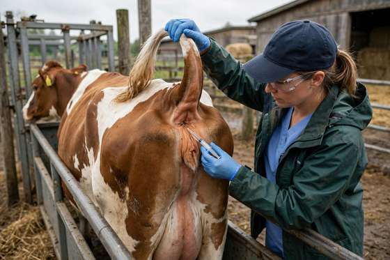
Epidural first — it stops the straining
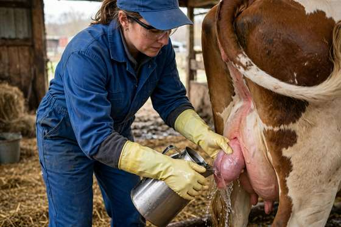
Clean gently with warm water
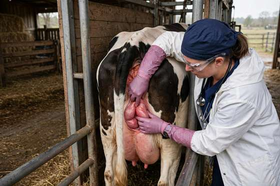
Gentle manual replacement
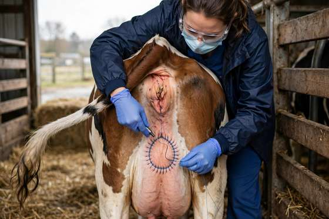
Purse-string suture holds it inside
Severe Cases — Surgical Resection
When the prolapsed tissue is badly damaged, torn, necrotic or cannot be replaced, the veterinarian removes the damaged part (rectal resection and anastomosis) under anaesthesia. This is a bigger operation with a longer recovery, and it is the main reason early treatment matters.
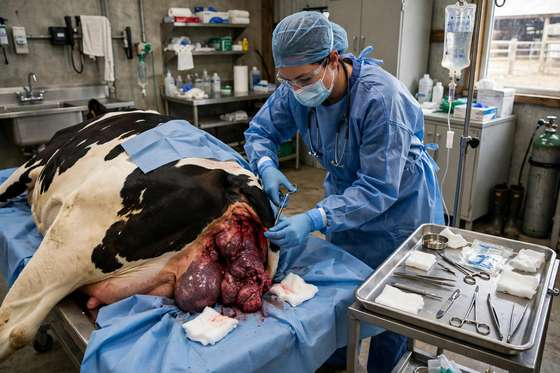
Severe prolapse — damaged tissue needs resection
1
Amputation of the prolapsed part(The damaged tissue is removed and the healthy ends are sutured together)
2
Strict aftercare(Soft feed, antibiotics and pain relief as advised by the veterinarian)
3
Guard against stricture(Scar narrowing of the rectum is the main late complication — follow-up checks matter)
Postoperative Care and Prevention
After repair, the animal needs soft feed, clean water, rest and treatment of the original cause. A cow that keeps straining will prolapse again — prevention is mostly about stopping the straining.
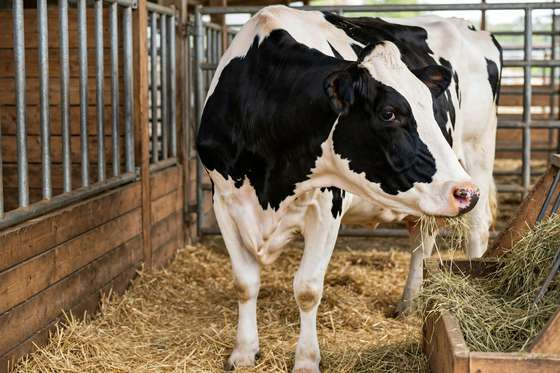
Recovery — soft feed and rest
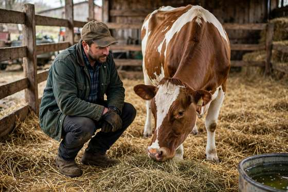
Watch for straining for 48 hours
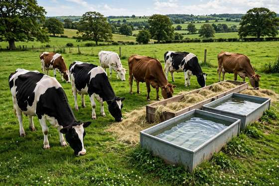
Prevention — good feed, clean water, parasite control
Important: All surgical procedures must be performed by a qualified veterinarian under proper anaesthesia and aseptic conditions. Never attempt surgery on your own animals without veterinary training.
⚠ Important Tips:
Call the veterinarian the same day — a fresh prolapse is a simple repair; an old one is surgery.
Keep the prolapsed tissue clean, moist and protected from flies and injury until the vet arrives.
Never push a prolapse back roughly or with dirty hands.
Deworm calves on schedule and treat coccidiosis early.
Change rations gradually — sudden feed changes cause the diarrhoea that starts the straining.
Check urine flow in any straining bull or steer — urinary blockage is a hidden cause.
Frequently Asked Questions
What causes rectal prolapse in cattle?
Repeated forceful straining (tenesmus) is the cause. The commonest triggers are diarrhoea from coccidiosis or worms, heavy intestinal parasite burdens, urinary straining from urolithiasis, difficult calving, chronic coughing and sudden feed changes. The prolapse itself then causes more straining, so the condition worsens quickly.
How is rectal prolapse treated in cattle?
Most early cases are treated by manual reduction: the veterinarian gives a caudal epidural to stop straining, cleans the prolapsed tissue with warm antiseptic water, gently pushes it back, and places a purse-string suture around the anus to hold it in place. The cause of the straining must be treated at the same time.
What is a purse-string suture in prolapse repair?
A purse-string suture is a ring of stitches placed in the skin around the anus after the rectum has been replaced. It is tightened just enough to keep the rectum inside while still leaving room for dung to pass. It is usually removed after about 5 to 7 days.
When does rectal prolapse need surgery?
Surgery (resection) is needed when the prolapsed tissue is badly swollen, dry, torn or dead, when it cannot be replaced, or when the prolapse keeps coming back after reduction. In resection the damaged part is removed and the healthy ends of the rectum are sutured together.
Can rectal prolapse come back after treatment?
Yes, if the cause of straining is not treated. Recurrence is common when worms, coccidiosis or urinary problems are left untreated, or when the purse-string suture is removed too early. Treating the cause and watching the animal for 48 hours after repair greatly reduces recurrence.
My calf has a small prolapse — is it serious?
A small prolapse in a calf is common and usually treatable, but do not ignore it. It often means worms or coccidiosis. Keep the tissue clean and moist, call the veterinarian the same day, and have the calf checked for parasites.
How do I prevent rectal prolapse in my herd?
Prevent the straining: deworm on schedule, treat coccidiosis early, change rations gradually, provide clean water and good-quality feed, and check any straining animal early. Calves need the most attention because they prolapse most easily.
گائے میں مقعد باہر نکل آنے (rectal prolapse) کا علاج کیا ہے؟
ڈاکٹر پہلے کمر کے نچلے حصے میں سن کرنے والا ٹیکہ (epidural) لگاتا ہے تاکہ زور لگانا رک جائے، پھر باہر نکلی ہوئی آنت کو گرم صاف پانی سے دھو کر آہستہ سے واپس رکھتا ہے اور مقعد کے گرد پرس سٹرنگ ٹانکا لگاتا ہے۔ ساتھ ہی زور لگانے کی وجہ — کیڑے، دست یا پیشاب کی رکاوٹ — کا علاج بھی ضروری ہے۔
Key Takeaway
Rectal prolapse is a straining disease — treat the prolapse, but always find and treat the cause of the straining too. Early cases reduce easily with an epidural and a purse-string suture; delayed cases with damaged tissue need resection. The sooner the veterinarian is called, the simpler the repair.